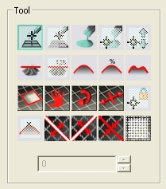
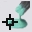
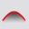
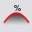
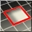
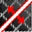
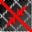
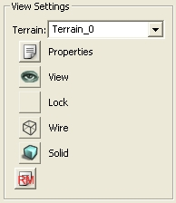

UDN
Search public documentation:
TerrainEditorUserGuideCH
English Translation
日本語訳
한국어
Interested in the Unreal Engine?
Visit the Unreal Technology site.
Looking for jobs and company info?
Check out the Epic games site.
Questions about support via UDN?
Contact the UDN Staff
日本語訳
한국어
Interested in the Unreal Engine?
Visit the Unreal Technology site.
Looking for jobs and company info?
Check out the Epic games site.
Questions about support via UDN?
Contact the UDN Staff
地形编辑器用户指南
概述
打开地形编辑器

地形编辑器界面

图片1: TerrainEdit (地形编辑)对话框
| 1 | Tools(工具)?. | |
| 2 | Settings(设置)?. | |
| 3 | View Settings(视图设置)?. | |
| 4 | Import\Export(导入\导出)?. | |
| 5 | Brushes(画刷)?. | |
| 6 | Tessellation(细分)?. | |
| 7 | The Browser Window(浏览器窗口)?. | |
| 8 | 底排按钮?. |
工具

图片2: 工具部分。 可以使用以下工具(按照从左到由、从上到下的顺序)：
Add/Remove Section(添加/删除部分)

这个工具将可以从任何方向来添加或删除现有地图的部分。这个工具仅限于 添加/删除 MaxTesselationLevel(最大细分层次)的块。光标必须移动块的尺寸大小来 添加/删除 块。按下CTRL键并左击可以启动工具来添加部分，而按下CTRL键并右击将会使工具删除部分地形。按住按钮并拖拽鼠标将会覆盖将要添加或删除的地图块的轮廓。添加的块将会显示为绿色的覆盖图，删除的部分将会显示为红色的覆盖图。当释放按钮时，考虑到 添加/删除的 块和地形位置的差异，如果需要，它们将会进行一定量的偏移来解决这个位置差异。
Add/Remove Polygons (添加/删除 多边形)

这个工具当前不可用。
Paint(描画)

当选中这工具时，如果按住CTRL并按下鼠标左键，工具将会在地形上描画选中的层。It will 'un-paint' (remove the layer) if CTRL -right mouse is pressed. 当在图层浏览器中选中高度图时，按住CTRL并按下鼠标左键将会升高地形的高度，而按住CTRL并按下鼠标右键将会降低高度。 地形描画支持分离的地形边缘的正确匹配功能。
Vertex Paint (顶点描画)

当选中该工具时，它允许您直接地选择顶点并上下地移动它们，且它可以容易地使用静态网格物体和地形的边缘相匹配。在编辑器中，可以按下CTRL键并左击来选择顶点； 按下CTRL键并右击来取消选择顶点。注意 选择/取消选择 动作是叠加操作。要想清除当前选中的所有节点，可以按下CTRL-ALT-SHIFT并右击来实现。 要想移动选中的节点，可以通过按下CTRL-ALT-并左击，然后上下移动鼠标来实现。 如果Setting(设置)部分的‘SoftSelect(软选择)’选项处于选中状态，那么在进行顶点的 选择/取消选择 操作时，操作将100%在工具的圆圈内，在衰减半径内的顶点将会沿着Min(最小半径)到Max(最大半径)以逐渐缩小的权重进行选择。以100%的权重选择的顶点将在它们的上方显示一个白色的球体，随着权重衰减为0时，颜色渐变为黑色。 如果没有选中SoftSelect(软选择)复选框，则将会选中完全地包含在工具圆圈内的顶点(也就是，工具圆圈周围的方框也将会以100%的权重选中)。 当编辑时，通过把Strength(强度)设置的值和选中顶点的权重及鼠标移动量相乘来移动顶点。
Manual Edit(手动编辑)

这个工具当前不可用。
Flatten(平整)

当选中高度图并您按下CTR+左击时，这个工具将会把地形平整为那个选中的地形高度。如果 选中Settings(设置)部分的’ Angle(角度)’单选框，地形将被平整为您按下CTRL键并左击时所决定的角度。另外，如果取消选中Settings(设置)部分的‘Angle(角度)’复选框并在‘Height(高度)’框中设置一个值，地形将会被平整为所提供的值。
Flatten Specific (精确平整)

这个工具当前不可用。它的功能是通过上面所描述的‘Height(高度)’设置中的值来平整地形，以后将会删除这个工具。
Smooth(平滑)

这个工具将会围绕着点击的中心点来使地形变得平滑。如果选中了高度图，它将会调整高度。如果选中的地形层次，它将会是alpha贴图值变得平滑。
Average(均分)

这个工具将会把受到影响的点设置为它们所有值的平均值。对于高度或地层图都是有用的。
Noise(噪声)

这个工具将会向选中的 层次/高度图 中注入噪声。
可见性

如果按下CTRL键并左击，这个工具将会在地形中描画洞；如果按下CTRL并右击，它将会移除洞。为了避免地形在删除了细节时这些洞不消失，所以这个工具限用于MaxTesselationLevel。
Texture Pan(贴图平移)

当选中这个工具，按下CTRL键并左击然后拖动鼠标时，将会在浏览器窗口中平移当前选中的地形材质的贴图。 （注意： 目前，这个改变不能正确地传递给地形材质，因为它需要重新编译地形材质，这个过程是很慢的。目前我们推荐直接在地形材质属性窗口中改变这些值。
Texture Rotate(贴图旋转)

当选中这个工具，按下CTRL键并左击然后拖动鼠标时，将会在浏览器窗口中旋转当前选中的地形材质的贴图。 （注意： 目前，这个改变不能正确地传递给地形材质，因为它需要重新编译地形材质，这个过程是很慢的。目前我们推荐直接在地形材质属性窗口中改变这些值。
贴图缩放
当选中这个工具，按下CTRL键并左击然后拖动鼠标时，将会在浏览器窗口中缩放当前选中的地形材质的贴图。 （注意： 目前，这个改变不能正确地传递给地形材质，因为它需要重新编译地形材质，这个过程是很慢的。目前我们推荐直接在地形材质属性窗口中改变这些值。
Lock Vertex(锁定顶点)

这个工具当前不可用。
Mark Unreachable(标记为不可到达)

这个工具当前不可用。 （注意： 这个工具是作为碰撞优化来设计的；但是到目前为止我们还没有这方面的需要。如果使用当前的碰撞实现，它潜在地使事情变得更加复杂。
Split Terrain X(分隔地形X)

这个工具将会沿着当前选中的X轴来分隔地形。当启用这个工具时，将会在分隔发生的地方渲染一条黄色的线。按下CTRL键并左击便可以分隔地形。
Split Terrain Y(分隔地形Y)

这个工具将会沿着当前选中的Y轴来分隔地形。当启用这个工具时，将会在分隔发生的地方渲染一条黄色的线。按下CTRL键并左击便可以分隔地形。
Merge Terrain(融合地形)

假设两个邻近的地形可以正确地匹配，那么这个工具可以把它们融合到一起。当启用该功能，在融合发生的地方将会渲染黄色的线条。如果这两个地形不能进行融合，那么将会出现线。按下CTRL键并左击便可以使它们进行融合。
Orientation Flip(方位翻转)

这个工具将会翻转地形块的边缘的方向。按下CTRL并左击将会把边缘翻转为默认方向的反方向。按下CTRL键并右击则可以把边缘恢复为默认方向。 注意边缘翻转仅在最高的细分层次上有效。
设置

图片3: 工具设置部分。
Per-Tool(每种工具分别设定) 复选框
当选中时，这个设置将仅应用于当前活动的工具。Scale(缩放)组合框
当前没有使用。SoftSelect(软选择) 复选框
当选中时，顶点 描画/编辑 工具将使用顶点的软选择。Constrained(强行限制) 复选框
当选中这项时，如果地形编辑器的TessellationLevel(细分层次)设置为除0以外的值时，编辑将仅对设置细分的顶点有作用。较高细节的顶点将自动地进行设置来和它们的已经编辑的邻居顶点所决定的平面相匹配。Angle(角度) 复选框
这个控制仅在激活Flatten(平整)工具时才有效。如果在那时选中了该复选框，平整工具将会使用当工具激活时所决定的角度。Height(高度)文本框
这个控制仅在激活Flatten(平整)工具时才有效。如果没有选中Angle(角度)选项并且在这个文本框中输入了值，那么平整工具将会使用这个值作为高度值来进行平整。Slider(滑块)/ 文本框 对
对于以下的每个画刷设置都有一对 滑块/文本框。- Strength(强度)
- Radius(半径)
- Falloff(衰减)
Mirror (镜像)组合框
这个组合框允许您为特定地形工具的应用程序选择镜像模式。在编辑过程中，当一个工具支持镜像时，那么在它的镜像位置将会出现第二个工具的紫色光标。镜像组合框包含以下选项：| 方式 | 描述 |
|---|---|
| NONE | 不镜像工具 |
| X | 使工具相对于X轴镜像 |
| Y | 使工具相对于Y轴镜像 |
| XY | 使工具相对于X和Y轴镜像 |
视图设置

图片4: 视图设置部分。
Terrain (地形)组合框
这个组合框允许您从所有当前的地形actors中选择一个地形进行编辑。Properties(属性)按钮
当按下时，这将会弹出一个关于当前选中的地形的属性窗口。View (查看)按钮
当‘眼睛’图片出现时，将可以看到地形。当点击它，按钮将会变为‘空’的按钮，地形将会隐藏在关卡中。Lock (锁定)按钮
当‘空的’图标出现时，将可以编辑地形。当点击它，按钮将会变为‘挂锁’的按钮，地形将不会接受任何编辑命令。Wire(线框) 按钮
还没有实现。Solid (固体)按钮
还没有实现。Recompile Materials(重新编译材质) 按钮
当押下该按钮时，应用到当前地形的所有shaders都将会进行重新编译。导入/导出

图片5: 导入/导出 部分。
Import(导入) 按钮
允许导入高度图(从16-位BMP文件导入)、地图层的alpha贴图(从16-位BMP文件导入)或地形(从T3D文件导入)。 要想导入高度图，则必须选中‘HeightMap Only(仅高度图)?’选项，并且在地形浏览器中必须选择要导入的高度图。 要想导入alpha贴图，则必须选中‘HeightMap Only(仅高度图)?’和‘Into Current(应用到当前)?’选项，并且在地形浏览器中必须选择要导入的地图层。Export(导出) 按钮
允许导出高度图(导出为16-位的BMP文件)或地形(导出为T3D文件)。 如果想导出高度图，则必须选中‘HeightMap Only(仅高度图)?’选项，并且必须在地形浏览器中选择高度图。 如果想导出alpha贴图，则必须选中‘HeightMap Only(仅高度图)?’选项，并且必须在地形浏览器中选择地形层。Height Map Only(仅高度图)? 复选框
如果选中这个复选框，当押下 Import/Export(导入/导出)按钮时，导出操作将仅针对高度图进行。如果在地形浏览器窗口中选择了一个层，并且选中了这个复选框，那么将会导入/导出alpha贴图。Into Current(导入至当前)? 复选框
如果同时选中Into Current(导入至当前)?和‘Height Map Only(仅高度贴图)?’复选框，当押下导入按钮时，高度图将会被导入到在View Setting(视图设置)中的Terrain(地形)组合框中当前选中的地形中。 注意: 导入的高度图必须和要导入到的地形的尺寸相匹配，否则操作将会失败。Bake DisplacementMap(烘焙位移贴图) 复选框
当前没有实现。Class(类别) 组合框
决定了当 导入/导出 高度图时所使用的factory。画刷

图片6: 画刷部分 这个部分的控制按钮允许您对预先设置的画刷尺寸进行选择。 如果您使用滑块来设置自定义值，您可以右击其中一个画刷并把那些设置的值存储到画刷按钮中。把鼠标光标放置在一个画刷上将会在工具提示窗口中显示存储的设置。
多边形细分

图片7: 多边形细分控制部分。
Increase (增加) 按钮
当押下这个按钮时，它将会增加当前地形的最大细分数。Decrease (减少)按钮
目前还没有实现。浏览器窗口

图片8: 地形浏览器 这个窗口提供了地形的可视化效果。它的工作方式和先前实现的TerrainBrowser(地形浏览器)窗口类似。一个情境关联的右击菜单使用户可以在这个对话框中完成大多数地形生成任务。 在浏览器窗口中新添加的一个功能，它可以从通用浏览器中选中的材质中自动地创建地图层。当选择这个工具时，编辑器将会自动地生成命名为TMAT_<选中材质的名称>地形材质，并把它保存到地图包中，同时也会生成名称为TLS_<选中材质的名称>的地形层。这个功能是为了简化地形的设立步骤而设计的。
底排按钮
以下图片显示了沿着对话框的底部显示的按钮。
图片9: 底部条的控制按钮。 对话框底部有以下控制按钮，从左到右介绍：